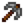

Velocidad
Hay dos estadísticas de Velocidad distintas:
 Velocidad del arma se refiere al tiempo que se tarda en golpear a un enemigo con un arma.
Velocidad del arma se refiere al tiempo que se tarda en golpear a un enemigo con un arma. Velocidad del jugador se refiere a la rapidez con la que se mueve el jugador.
Velocidad del jugador se refiere a la rapidez con la que se mueve el jugador.
Cada uno puede verse afectado de diversas maneras.
Velocidad del arma
La Velocidad del arma se refiere al tiempo que se tarda en golpear a un enemigo con un arma y al tiempo que se tarda en recuperarse antes de volver a golpear.
De forma predeterminada, con +0 de velocidad de arma, las espadas tardan 400 milisegundos[1] por acción y porras tardan 720 milisegundos[2] por acción (equivalente a un -8 de bonificación). Las dagas son mucho más rápidas que las espadas. Los tirachinas tardan 300 milisegundos[3] por acción y no se pueden modificar.
Cada punto de velocidad del arma reduce el tiempo necesario en 40 milisegundos,[4] lo que significa que la bonificación más efectiva es de +10 para las espadas, aunque el límite de rendimiento práctico puede ser inferior. (el bonificador máximo de alrededor de +4 para espadas o +12 para las porras).
Esto también significa que, al principio, la velocidad del arma tiene un efecto significativamente menor en las porras porque el aumento total de daño por segundo (cuando se golpea continuamente) es menor en porcentaje: una espada con +1 de velocidad del arma es capaz de infligir un 11% más de daño por segundo, mientras que una porra con +1 de velocidad de arma solo es capaz de infligir un 6% más de daño por segundo. A medida que aumenta el bonificador, las espadas alcanzan el límite de rendimiento práctico más rápido y las porras continúan mejorando con una bonificación más alta.
El bonificador de velocidad de movimiento del jugador (descrito a continuación) también se aplica a las armas,[5] y se acumula efectivamente con el bonificador de velocidad de arma. Por ejemplo, un arma con velocidad +2 sería tan rápida como un arma con velocidad +1 mientras está bajo los efectos del café por un +1 adicional.
Armas
Las siguientes armas golpean más o menos rápido que lo normal.
| Imagen | Nombre | Nivel | Descripción | Daño | Estadísticas | Obtención | Precio de compra | Precio de venta |
|---|---|---|---|---|---|---|---|---|
| Espadín de acero | 2 | Una hoja estándar de metal. | 4-8 | Recompensa del cofre en el piso 20 de las minas. | n/d | |||
| Espada oscura | 9 | Brilla con una energía misteriosa. | 30-45 | Botín en la Calavera encantada. | n/d | |||
| Sable pirata | 4 | Parece que en su día perteneció a un pirata. | 8-14 | Las minas (Piso 20+) Gremio de Aventureros (Después de desbloquear el piso 30 de las minas). |
||||
| Alfanje | 4 | Una hoja elaborada con esmero. | 9-17 | Gremio de Aventureros (Después de desbloquear el piso 25 de las minas). | ||||
| Espada forestal | 5 | Poderosa gracias a la magia del bosque. | 8-18 | Las minas (Pisos 20-60) | n/d | |||
| Cabeza de insecto | 6 | No es muy agradable de blandir. | 10-20 | Botín de Bicho Recompensa del Gremio de Aventureros por matar 125 bichos. |
||||
| Filo de hierro | 4 | Un espadón muy pesado. | 12-25 | Las minas (Piso 40+) | n/d | |||
| Florete | 6 | Una hoja elegante. | 15-25 | No se puede obtener. | n/d | |||
| Claymore | 6 | Es muy pesada. | 20-32 | Gremio de Aventureros (Después de desbloquear el piso 45 de las minas). | ||||
| Guja de Neptuno | 7 | Una reliquia de más allá del mar de Gema. | 18-35 | Pescando cofres de tesoro (Río / Océano / Lago de la montaña / Estanques burbujeantes) | n/d | |||
| Filo de obsidiana | 9 | Increíblemente afilado. | 30-45 | Recompensa del cofre en el piso 90 de las minas. | n/d | |||
| Espada ósea | 10 | Un trozo muy ligero de hueso afilado. | 20-30 | Gremio de Aventureros (Después de desbloquear el piso 75 de las minas). | ||||
| Hoja ósea | 6 | Una gran, afilada hoja hecha de hueso. | 26-42 | En Las minas en el piso 90 como premio (Únicamente si las recompensas mezcladas están activadas) | n/d | |||
| Hoja sagrada | 4 | Blandirla da esperanza. | 18-24 | Las minas (Pisos 80+) | n/d | |||
| Bracamante | 14 | Ligero y poderoso, hecho de acero. | 26-38 | Gremio de Aventureros (Después de desbloquear el piso 90 de las minas). | ||||
| Espada enana | 13 | Es antigua, pero la hoja nunca se desafila. | 65-75 | Cofres en Mazmorra del volcán | n/d | |||
| Espada galaxia | 26 | Nunca has visto nada parecido. | 60-80 | El Desierto (Lleva una Esquirla prismática a los Tres Pilares). | n/d | |||
| Espadón templado | 8 | Parece que pueda aguantarlo todo. | 29-44 | Caverna Calavera | n/d | |||
| Espada infinita | 17 | La verdadera forma de la espada galáctica. | 80-100 | Combina la Espada galaxia con |
n/d | |||
| Daga enana | 11 | Es antigua, pero la hoja nunca se desafila. | 32-38 | Cofre en la Mazmorra del volcán | n/d | |||
| Daga galaxia | 8 | Nunca has visto nada parecido. | 30-40 | Gremio de Aventureros (Después de obtener la Espada galaxia). | ||||
| Daga infinita | 16 | La verdadera forma de la daga galáctica. | 50-70 | Combinando la Daga galaxia con |
n/d | |||
| Fémur | 2 | Un hueso viejo y pesado cubierto de siglos de suciedad. | 6-11 | En Las minas en el piso 10 como premio (Únicamente si las recompensas mezcladas están activadas) | n/d | |||
| Maza de madera | 3 | Su sólida cabeza pega fuerte. Relativamente ligera para ser una porra. | 15-24 | En Las minas en el piso 60 como premio (Únicamente si las recompensas mezcladas están activadas) Las minas (Pisos 41-79) Gremio de Aventureros (Después de desbloquear el piso 40 de Las minas). |
||||
| Vara de plomo | 4 | Increíblemente pesada. | 18-27 | Las minas (Pisos 41-79) | n/d | |||
| Garrote | 5 | El mejor compañero de un bruto. | 27-40 | En Las minas en el piso 80 como premio (Únicamente si las recompensas mezcladas están activadas) Las minas (Pisos 101+) |
n/d | |||
| Machacador | 7 | Un martillo tremendamente pesado que hará volar a los enemigos. | 40-55 | En Las minas en el piso 110 como premio (Únicamente si las recompensas mezcladas están activadas) Las minas (Pisos 81-99) Caverna Calavera |
n/d | |||
| Martillo galaxia | 12 | Hecho de un material ultraligero que no has visto jamás. | 70-90 | Gremio de Aventureros (Después de obtener la Espada galaxia). | ||||
| Maza infinita | 17 | La verdadera forma del martillo galáctico. | 100-120 | Combinando el Martillo galaxia con |
n/d | |||
| Rizador de Haley | 6 | Está al rojo vivo y huele como su pelo. | 30-45 | Vendida por Haley por |
N/A | |||
| Cincel de Leah | 6 | La herramienta preferida de Leah para dar forma a la madera. | 30-45 | Vendida por Leah por |
N/A | |||
| Filomiau | 4 | Un arma inusual de un lugar muy lejano... | 20-20 | Sótano en la Torre del Mago | N/A | |||
| Bate de Alex | 7 | La zona de golpeo está abollada por el famoso Grand Slam de Alex. | 40-55 | Vendido por Alex por |
N/A | |||
| Martillo de Harvey | 7 | Trae recuerdos de la clínica de Harvey. | 40-55 | Vendido por Harvey por |
N/A | |||
| Llave inglesa de Maru | 7 | Una gran llave inglesa de metal. Huele a Maru. | 40-55 | Vendida por Maru por |
N/A | |||
| Sartén de Penny | 7 | La sartén preferida de Penny. Tiene un poco de mugre gomosa pegada por dentro. | 40-55 | Vendida por Penny por |
N/A | |||
| Guitarra vieja de Sam | 7 | Ha vivido tiempos mejores. | 40-55 | Vendida por Sam por |
N/A | |||
| Maza perdida de Seb | 7 | Una de las réplicas medievales de Sebastian. | 40-55 | Vendida por Sebastian por |
N/A |
Anillos
Los siguientes anillos aumentan la velocidad del arma:
| Imagen | Nombre | Descripción | Obtención | Precio de compra | Precio de venta |
|---|---|---|---|---|---|
| Anillo de esmeralda | Aumenta la velocidad del arma en un 10%. | Se compra en el Gremio de Aventureros después de alcanzar el piso 40 en las minas. |
Forja
La velocidad del arma se puede aumentar aún más usando una Esmeralda en la Forja hasta 3 veces, para un máximo de +7 de velocidad adicional.
Algunas herramientas también se pueden encantar usando una Esquirla prismática para ser un 33% más rápido.
Velocidad del jugador
La Velocidad del jugador se refiere a la rapidez con la que el jugador se mueve por el mundo.
La velocidad base del jugador es:
- 2 al caminar
- 5 al correr
- 6.6 al montar a caballo
Una variedad de Bonificadores positivos y negativos pueden cambiar la velocidad del jugador, como se detalla en comida y bebida y en bonificadores.
La velocidad también se ve afectada por algunos terrenos, pero no cuando se monta a caballo.
Aunque el terreno y/o los bonificadores negativos pueden disminuir la velocidad de un jugador, la velocidad nunca se reduce por debajo de 1.
Comida y bebida
Las siguientes comidas aumentar la Velocidad del jugador. Solo un bonificador derivado de la bebida y uno derivado de la comida pueden estar activos en un momento dado, por lo que la velocidad +2 solo es posible si la velocidad +1 de una bebida (Café y un Café con triple de expreso) y se acumula con la velocidad +1 de una comida.
El Café está disponible en el Salón Fruta Estelar todos los días por  300o, pero los otros platos pueden aparecer de manera aleatoria en el menú de Gus.
300o, pero los otros platos pueden aparecer de manera aleatoria en el menú de Gus.
| Imagen | Nombre | Descripción | Ingredientes | Energía / Salud | Bonificadores | Duración | Origen receta | Precio de venta | |||
|---|---|---|---|---|---|---|---|---|---|---|---|
| Caramelo mágico | Un raro y poderoso caramelo preparado con la energía de un fragmento prismático. | N/A |  Minería (+2) |
N/A - Debe ser comprado, ganado, o puede caer en la Calavera encantada | |||||||
| Café | Huele de maravilla. Seguro que te da energía. | Salón Fruta Estelar Se produce en un Barril |
|||||||||
| Tortas de cangrejo | Cangrejo, pan rallado y huevo con forma de medallones. Fritas hasta que quedan doradas. |
|
|||||||||
| Bocaditos de pimiento | Pimientos picantes rellenos de queso y rebozados. |
|
|||||||||
| Anguila picante | ¡Pica mucho! Ten cuidado. |
|
|||||||||
| Supercomida | Una comida realmente vigorizante. |
|
|||||||||
| Café con triple de expreso | ¡Más potente que el café normal! |
Bonificadores
Los siguientes bonificadores disminuyen la Velocidad del jugador. Estos cinco bonificadores de efectos especiales pueden estar activos simultáneamente y se pueden acumular además de dos bonificadores de +1 de velocidad de comidas y bebidas.
| Imagen | Nombre | Efecto | Causa | Duración |
|---|---|---|---|---|

|
Un poco alegre | Consumir alcohol (Cerveza, Hidromiel, Cerveza pálida o Vino). | ||

|
Pringue de baba | Ser atacado por una baba. | ||
|
|
Un poco alegre | Consumir alcohol (Cerveza, Hidromiel, Cerveza pálida, o Vino) | ||

|
Quemado | Ser atacado por un Chisporroteador de Magma | ||

|
Congelamiento | Ser atacado por un Mago esqueleto |
Terreno
Tres tipos de terreno pueden alterar la velocidad del jugador, pero solo si el jugador no está montando a caballo.
- El Suelo tiene un aumento de velocidad de +0,1, pero solo cuando se encuentra en el exterior de la granja.
- La Hierba tiene una penalización de -1 a la velocidad.
- Los Cultivos tienen una penalización de -1 a la velocidad, pero solo si el jugador está corriendo. Las semillas no cuentan como cultivos.
Trivia
- En teoría, los cinco bonificadores relacionados con la velocidad podrían estar activos simultáneamente: tres positivos (máximo +4 de velocidad) y dos negativos (mínimo -5 de velocidad).
Referencias
- ↑ Véase MeleeWeapon::defaultSpeed en el código del juego.
- ↑ Véase MeleeWeapon::baseClubSpeed en el código del juego.
- ↑ Véase Slingshot::GetRequiredChargeTime en el código del juego.
- ↑ Véase MeleeWeapon::millisecondsPerSpeedPoint en el código del juego.
- ↑ Véase MeleeWeapon::setFarmerAnimating en el código del juego.
| Habilidades y Estadísticas | |
|---|---|
| Habilidades | Agricultura • Combate • Minería • Pesca • Recolección |
| Estadísticas | Ataque • Daño crítico • Defensa • Golpe crítico • Inmunidad • Magnetismo • Peso • Suerte • Velocidad |